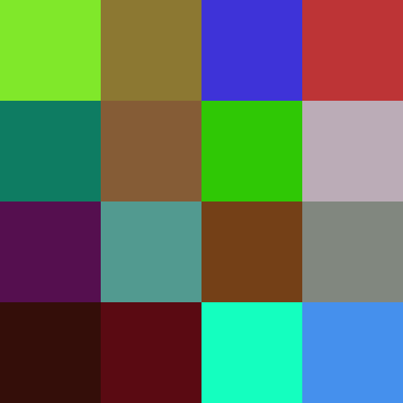
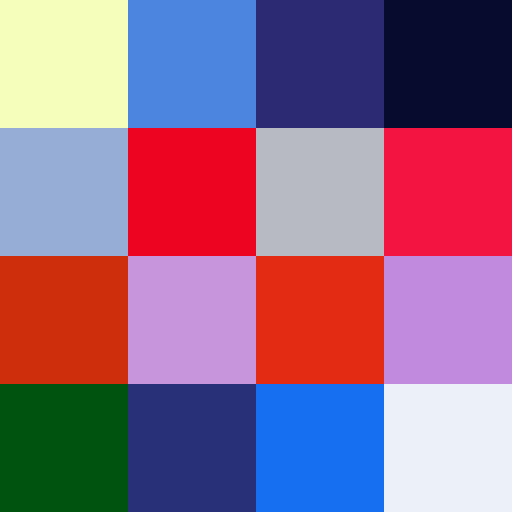
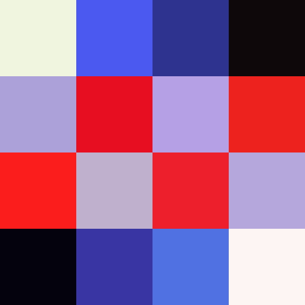
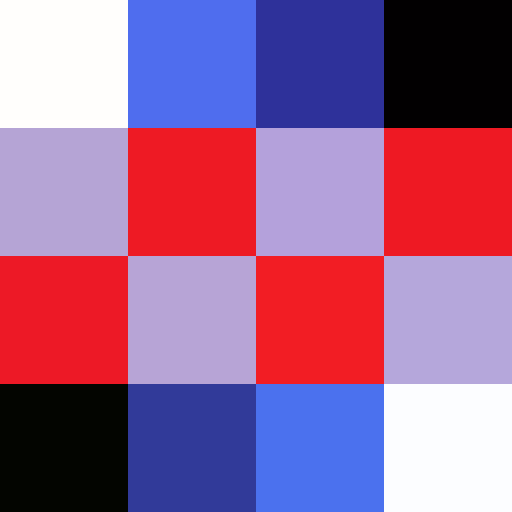

As part of the IN711/Algorithms and Data Structures paper, a practical involved writing a genetic algorithm to mimic a set a of coloured squares (a chromosome).
I expanded on this idea to allow the application to evolve into user-supplied images of varying sizes.
Process
The basic flow of the algorithm is:
Generate a population of random images
While the total Cost of the best image is greater than zero:
Compare each member of the population to the target image and store each difference (Cost)
Arrange the population by lowest cost (closest image accuracy)
Divide the population at a given spot (usually half-way)
Randomly select pairs from the "top" half
Create "child" images by combining sections of the selected pairs
Overwrite the "bottom" half of the population with the new children
Randomly mutate specific genes across the population
Some process details
The application was implemented in C#.
Images are loaded into an array of Color objects.
The Cost is calculated as the total absolute difference between the RGB values of each pixel in the image.
Multiple parameters are set at run-time by the user. For example, the probability of mutation across the population,
and how often to draw the image to screen - this values also serves as a trigger to save the current image file to disk.
Examples
The original test image was a 4x4 image comprised of a pattern of 6 colours; black, white, grey, red, blue and a lighter blue:
public static Color[] TARGET_DRAW16 = { wh, lb, db, bl,
gr, re, gr, re,
re, gr, re, gr,
bl, db, lb, wh };
Test simulation results
The first generation's fittest candidate had a cost of 3825.

At 600 generations, after 40 milliseconds, the pattern is becoming visible, with a cost of 840.

At 13,000 generations, after around 900 milliseconds, the pattern is clearly visible, with a cost of 366.

Continuing from this point brings minor improvements over a longer time. At generation 240,000, after around 17 seconds, differences in the shades are only slightly perceptible, with a cost of 94.

Pixel Art
The idea was that if everything above worked, it should be trivial to apply the above algorithm to any image.
A 32x32 array comprised of six Colors representing a popular video game character was loaded to test the algorithm with more complex images,
After some experimentation to find efficient parameters (more on this later) the results were positive.
This video shows a series of images saved every 200 generations, starting with generation 1 at a cost of 364,452, running to generation 121,200 with a cost of 49,987.
The processing time was around 2 minutes and 45 seconds.
At this point it became obvious that hand-coding arrays of Color objects is silly.
Loading User-provided Art
The application was modified to accept images of the resolutions 8x8, 16x16, 32x32, 64x64, 128x128, 256x256, and 512x512.
The images are iterated over and each pixel's RGB values is saved into a new target array.
The application draws onto a canvas of 512x512 and the sizes of pixels required to fill the canvas properly are calculated at run-time.
After some experimentation, it was found the value of the probability to mutate (prMutate) needs to be lowered as the image resolution and thus the chromosome size, increases.
For example, for a population of 16 32x32 images, a good prMutate is 0.01:
16 * 32 * 32 * 0.01 = 163.84 (164 mutations per generation).
Or for a population of 16 128x128 images, 0.00004:
16 * 128 * 128 * 0.0002 = 52.4288 (52 mutations per generation).
Note: Populations over 16 were not tested thoroughly as the time required for evolving large populations of high resolution images were found to be restrictive.
Higher resolution examples
A 128x128 square section of René Magritte's 1964 artwork The Son of Man was chosen as a test image due to subtle
shades in dark/grey colours mixed with highly contrasted, bright colours.
This video shows a series of images saved every 1000 generations, starting with generation 1 at a cost of 3,851,292, running to generation 550,000 with a cost of 694,811.
The processing time was around 3 hours, 45 minutes, and 10 seconds.
Incoming - a 256x256 image - if it ever finishes...
Incoming - Source code
Thanks to Jordan A and Liam H for help with discussion, ideas, and fixing bugs in my code :)